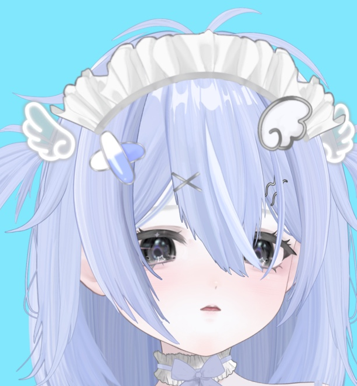

6つの星をつないで、ひとつの星座をつくろう。

小さな謎を解くと、星がひとつずつ集まるよ。
すべての謎が解けたね。星たちは、いま何個あるかな？
夜空のどこかに、まだ何かあるかもしれない。
星を動かして、あの星座を夜空に描いてみよう。
※ 星は指で動かせるよ
夜空に、きれいな星座が輝いている。
でも、セラの瞳にはもう星がない。
「……君と、一緒に見たかったのに。」
星座の形を、どこかで見た気がする。
記録番号：00 / 星座復元計画
この星座は「ふたりで見る夜空」を表す。星が揃っても、見る人の光が失われては意味がない。
失われた瞳の星は、夜空から新しい光を迎えることで取り戻せる。
観測予報：毎日 午前0時00分〜0時05分、流星が現れる。
観測場所：星座を完成させた夜空。流星を見つけたら、大切な場所へ届けること。
※この記録を開いた後、指定時刻に夜空へ戻ってください。
瞳に光が戻り、セラが夜空を見上げる。
「星座になれたね。」
TRUE END
動画が表示されない場合は YouTubeで見る
✦ YOIZORA SERA / a little constellation story ✦